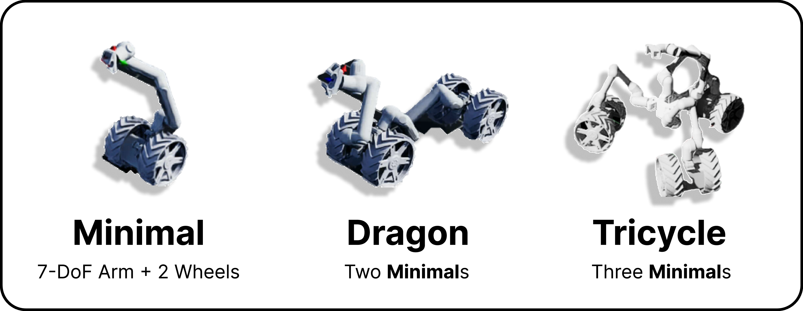
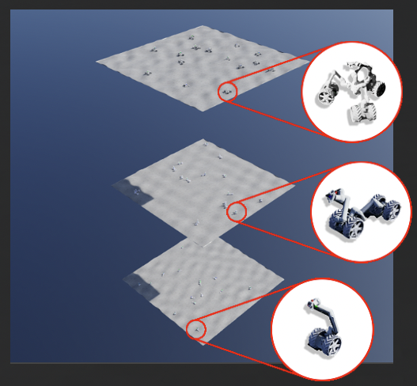
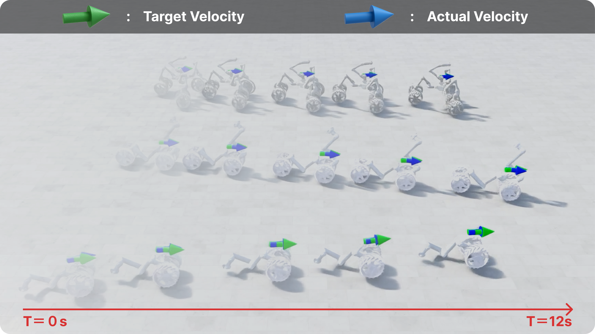
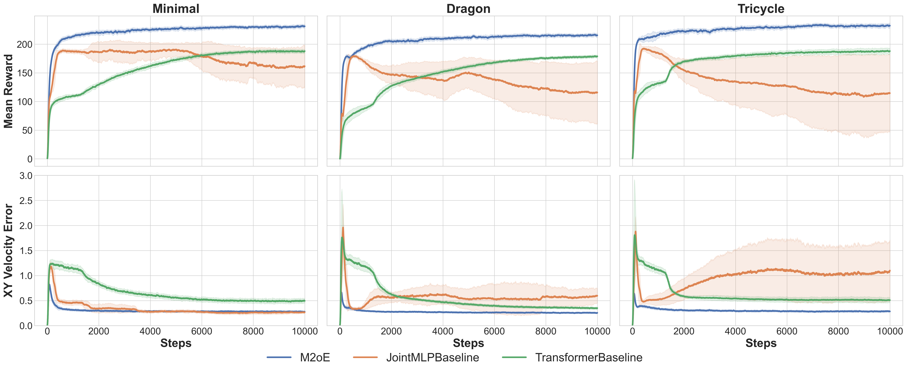
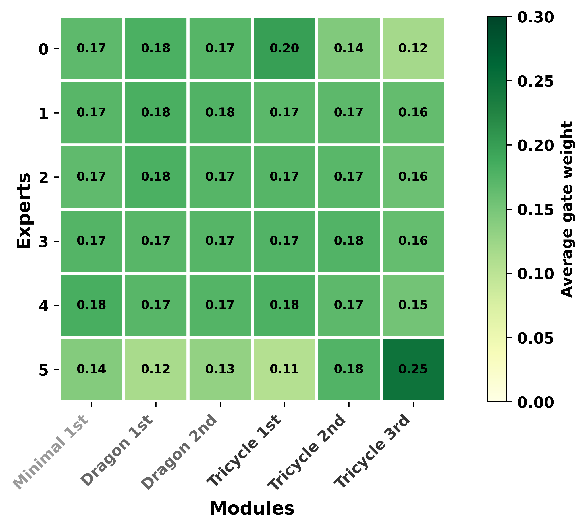
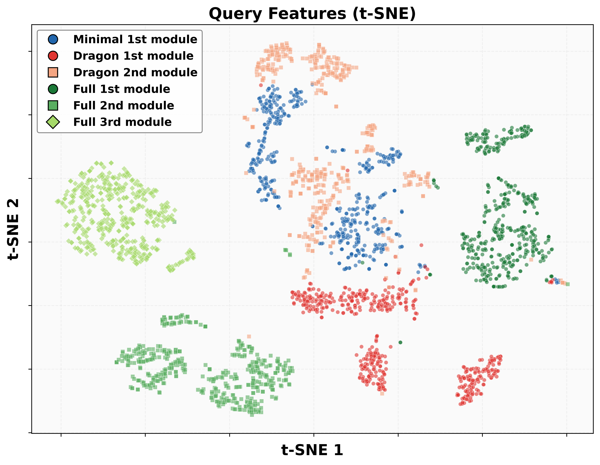

Project Video
Abstract
Modular robots offer a promising solution for building versatile and adaptable robotic systems. For instance, space exploration robots can be designed to reconfigure to meet diverse task demands across varying environments. However, training such systems by Reinforcement Learning (RL) remains challenging due to the diversity of morphologies and the lack of simulation environments that support simultaneous multi-morphology learning. We present Modular Mixture of Experts (M2oE), a novel reinforcement learning backbone network that imitates the modular structure of robots to enable efficient and module-wise parallelizable policy learning for modular robots. In M2oE, the shared pool of experts, combined with an attention-based gating mechanism that dynamically selects experts based on inter-module correlations, enables both specialization and generalization. This structure supports training across multiple morphologies within a single framework, avoiding gradient conflicts and enhancing experience sharing across modules and morphologies. To support training, we also extend the Isaac Lab simulator with multi-morphology extensions that enable concurrent training across diverse robot configurations. Experiments on a space-exploration-inspired modular robot, Moonbot, demonstrate that M2oE significantly improves learning efficiency and achieves superior performance compared to both MLP and Transformer baselines.
Method Overview

Experiment Platform - Moonbot


Results



